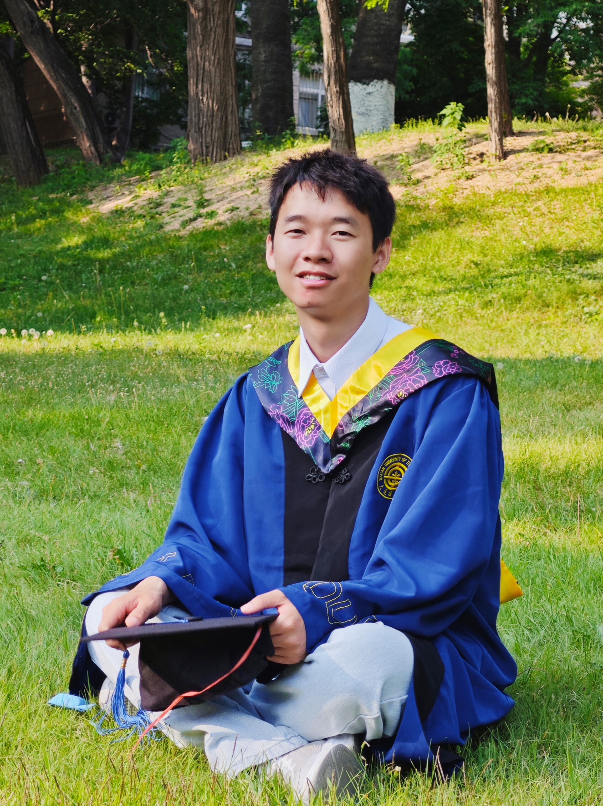

KEEP YOUR EYES ON THE STARS, AND YOUR FEET ON THE GROUND

刘桂生
15080255079
大连理工大学 | 学士
大连理工大学 | 硕士
lgs0000@mail.dlut.edu.cn
信息与通信工程
电子信息工程
研究方向
- AIGC
- Image Captioning
- Vision LLM
熟练语言
科研经历
基于语言模型的受控文本生成方法研究
2022.1 - 2022.6
针对商品评论、故事生成等自然语言生成应用，设计一种能控制文本的主题和情感的语言模型。利用对比学习，生成多种属性的文本特征；设计top-n权重解码，提升期望属性相关程度；利用额外判别器利于期望属性的生成。
基于扩散模型的图像描述研究
2022.7 - 2022.12
扩散模型以其强大的生成能力，在CV领域大放异彩，但是扩散模型在NLP上的工作还需进一步探索。利用扩散模型提高模型的泛化性以及描述的多样性；设计一种有效且便捷的模态融合方式，降低模型参数量；设计基于检索的方法提高描述的准确性。
医疗报告生成
2023.1 - 至今
虽然Image Captioning已经取得重大突破，但是针对医疗图像的报告生成依然是一大难题。利用对比学习的方法，挖掘医疗图像之间的不同特征，再基于GPT—2语言模型生成报告。
实习经历
算法策略岗 美团—视觉智能部—图像理解与生成组 2022.7-2022.9
工作描述：参与图像描述算法的研究。该算法针对用户自动评论问题，通过给定关键词、商品评分以及对应的图片，能够自动生成客户想生成的评论，让客户进行选择。此外，还负责扩散模型在图像描述任务方面的算法开发。
- 可控图像描述算法开发：利用CLIP和GPT-2实现可控图像描述。该算法能够根据用户输入的情感 （正面或者负面），生成对应的图像描述，应用面向生成正面评价和负面评价；
- 扩散模型的相关算法开发：采用扩散模型，对图像描述进行技术探索，并发表论文一篇;
- 数据采集：收集高质量的图文数据，其中每条评论文本都含有一张或多张对应的图片，并有关键词和评分等标签。
算法工程师 阿里集团-阿里云CTO线-智能算法1组 2023.6-2023.9
工作描述：参与多模态大模型相关算法的研究以及相关业务的落地，主要以VisualGLM、BLIP2等大模型为主要研究对象。
- 大模型下游任务算法开发：在当前多模态大模型的基础上，让模型能够识别图片中的具体位置，从而实现目标检测、物体识别、图像分割等任务；
- 参与中文BLIP2的开源：国内首个开源的中文BLIP2模型 (ModelScope链接)；
- 大模型量化算法开发：采用GPTQ等方法对大模型进行量化实验，以更少的资源实现项目落地。
Paper
➤ G. Liu, Y. Li, Y. Guo, et al. “Multi-Attribute Controlled Text Generation with Contrastive-Generatorand External-Discriminator”, Coling(CCF-B), 2022. [Paper]
➤ G. Liu, Y. Li, H. Fu, et al. “Prefix-diffusion: A Lightweight Diffusion Model for Diverse ImageCaptioning”, Coling(CCF-B), 2024. [Paper]
➤ 刘桂生 等人. 《一种基于扩散模型的图像描述算法》,专利.